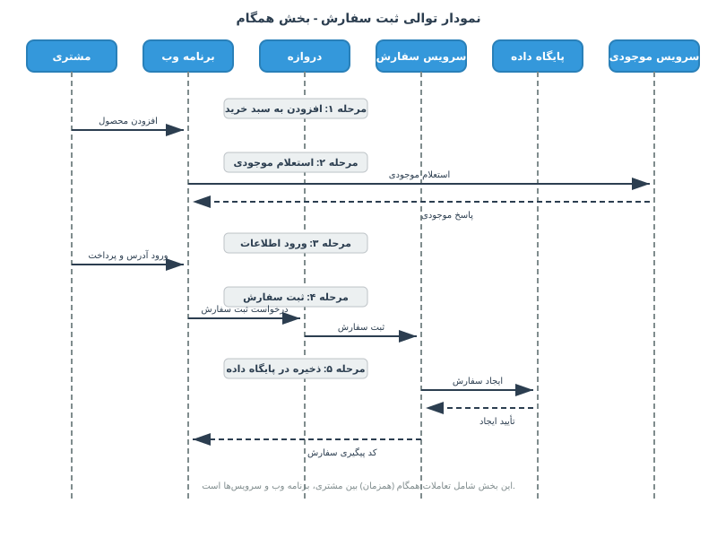
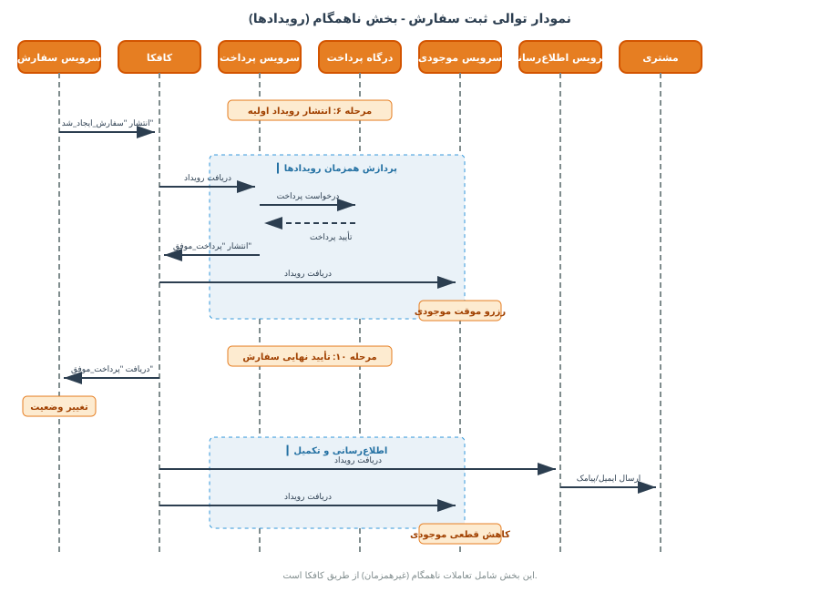
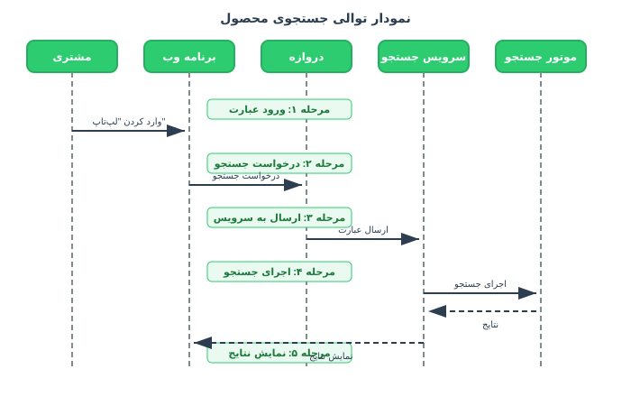

سناریوهای اجرایی¶
نمای کلی¶
در این بخش، جریانهای اصلی عملکردی سامانه به تصویر کشیده میشوند و نحوه تعامل سرویسها در سناریوهای کلیدی تشریح میگردد.
این سناریوها نشان میدهند که سرویسهای مختلف چگونه با یکدیگر ارتباط برقرار میکنند و دادهها چگونه در سامانه جریان مییابند. سه سناریوی اصلی شامل ثبت سفارش، جستجوی محصول و پردازش پرداخت در ادامه تشریح میشوند.
سناریوی ثبت سفارش¶
این سناریو، جریان کامل یک سفارش را از زمان افزودن محصول به سبد خرید تا زمان نهاییسازی و اعلام کد رهگیری، به تصویر میکشد.
بخش اول: ثبت سفارش (ارتباط همگام)¶
در این بخش، تعاملات همگام (همزمان) بین مشتری، برنامه وب و سرویسها به تصویر کشیده شده است. این تعاملات شامل استعلام موجودی، ثبت سفارش و ذخیرهسازی در پایگاه داده میشود.

بخش دوم: پردازش رویدادها (ارتباط ناهمگام)¶
در این بخش، تعاملات ناهمگام (غیرهمزمان) از طریق کافکا به تصویر کشیده شده است. پس از ثبت اولیه سفارش، رویداد «سفارش_ایجاد_شد» در کافکا منتشر میشود و سرویسهای پرداخت، موجودی و اطلاعرسانی به صورت موازی و ناهمگام به پردازش آن میپردازند.

مراحل سناریوی ثبت سفارش¶
| مرحله | کنشگر | سرویس | توضیح |
|---|---|---|---|
| ۱ | مشتری | برنامه وب | مشتری محصول مورد نظر را به سبد خرید خود اضافه میکند. |
| ۲ | برنامه وب | سرویس موجودی | برنامه وب، موجودی محصول را به صورت همگام از سرویس موجودی استعلام میکند. |
| ۳ | مشتری | برنامه وب | مشتری آدرس تحویل را وارد کرده و گزینه پرداخت را انتخاب میکند. |
| ۴ | برنامه وب | دروازه رابط برنامهنویسی | برنامه وب، درخواست ثبت سفارش را از طریق دروازه رابط برنامهنویسی به سرویس سفارش ارسال میکند. |
| ۵ | سرویس سفارش | پایگاه داده PostgreSQL | سرویس سفارش، یک رکورد سفارش با وضعیت «در انتظار پرداخت» در پایگاه داده خود ایجاد میکند. |
| ۶ | سرویس سفارش | کافکا | سرویس سفارش، رویداد «سفارش_ایجاد_شد» را در صف پیام کافکا منتشر میسازد. |
| ۷ | کافکا | سرویس پرداخت | سرویس پرداخت، رویداد «سفارش_ایجاد_شد» را از کافکا دریافت کرده و درخواست پرداخت را به درگاه بانکی ارسال میکند. |
| ۸ | کافکا | سرویس موجودی | سرویس موجودی، رویداد «سفارش_ایجاد_شد» را از کافکا دریافت کرده و موجودی محصول را به صورت موقت رزرو مینماید. |
| ۹ | سرویس پرداخت | کافکا | پس از تأیید موفقیتآمیز پرداخت توسط درگاه بانکی، سرویس پرداخت، رویداد «پرداخت_موفق» را در کافکا منتشر میکند. |
| ۱۰ | کافکا | سرویس سفارش | سرویس سفارش، رویداد «پرداخت_موفق» را از کافکا دریافت کرده و وضعیت سفارش را به «تأیید_شده» تغییر میدهد. |
| ۱۱ | کافکا | سرویس اطلاعرسانی | سرویس اطلاعرسانی، رویداد «سفارش_تأیید_شد» را از کافکا دریافت کرده و ایمیل و پیامک تأیید سفارش را برای مشتری ارسال میکند. |
| ۱۲ | کافکا | سرویس موجودی | سرویس موجودی، رویداد «سفارش_تأیید_شد» را از کافکا دریافت کرده و وضعیت رزرو موجودی را به قطعی کاهش موجودی تغییر میدهد. |
سناریوی جستجوی محصول¶
این سناریو، جریان جستجوی محصول را از زمان ورود عبارت توسط مشتری تا نمایش نتایج، به تصویر میکشد.
در این سناریو، مشتری عبارت جستجو را در برنامه وب وارد میکند. درخواست از طریق دروازه رابط برنامهنویسی به سرویس جستجو ارسال میشود. سرویس جستجو با استفاده از موتور جستجوی Elasticsearch، عبارت را پردازش کرده و نتایج را به برنامه وب بازمیگرداند.

مراحل سناریوی جستجوی محصول¶
| مرحله | کنشگر | سرویس | توضیح |
|---|---|---|---|
| ۱ | مشتری | برنامه وب | مشتری عبارت کلیدی مانند «لپتاپ» را در نوار جستجوی وبسایت وارد میکند. |
| ۲ | برنامه وب | دروازه رابط برنامهنویسی | برنامه وب، درخواست جستجو را از طریق دروازه رابط برنامهنویسی به سرویس جستجو ارسال میکند. |
| ۳ | سرویس جستجو | موتور جستجو | سرویس جستجو، عبارت را به موتور جستجوی Elasticsearch ارسال کرده و نتایج را دریافت میکند. |
| ۴ | سرویس جستجو | سرویس کاتالوگ و سرویس موجودی | سرویس جستجو، در صورت نیاز، اطلاعات تکمیلی مانند قیمت و موجودی را با یکپارچهسازی از سرویس کاتالوگ و سرویس موجودی دریافت میکند. |
| ۵ | سرویس جستجو | برنامه وب | نتایج نهایی به برنامه وب بازگردانده شده و به کاربر نمایش داده میشود. |
بهبود کارایی جستجو¶
برای افزایش سرعت و کارایی جستجو، دو مکانیزم زیر پیادهسازی شده است:
-
حافظه نهان نتایج جستجو: نتایج جستجوی پرتکرار، با زمان انقضای ۵ دقیقه در حافظه نهان توزیعشده Redis ذخیره میشوند تا از پردازشهای تکراری و سنگین جلوگیری شود.
-
شبکه توزیع محتوا: تصاویر محصولات از طریق شبکه توزیع محتوا بارگذاری میشوند تا سرعت بارگذاری صفحه بهبود یابد.
سناریوی پردازش پرداخت¶
این سناریو، جریان پردازش پرداخت را از زمان درخواست مشتری تا تأیید نهایی، به تصویر میکشد.
در این سناریو، مشتری اطلاعات پرداخت خود را وارد کرده و درخواست پرداخت را ارسال میکند. سرویس پرداخت از هماهنگکننده درگاه پرداخت برای ارتباط با درگاه خارجی استفاده میکند و پس از تأیید، رویداد «پرداخت_موفق» را در کافکا منتشر میسازد.
مراحل سناریوی پردازش پرداخت¶
| مرحله | کنشگر | سرویس | توضیح |
|---|---|---|---|
| ۱ | مشتری | برنامه وب | مشتری اطلاعات پرداخت خود را وارد کرده و درخواست پرداخت را ارسال میکند. |
| ۲ | برنامه وب | دروازه رابط برنامهنویسی | برنامه وب، درخواست پرداخت را از طریق دروازه رابط برنامهنویسی به سرویس پرداخت ارسال میکند. |
| ۳ | سرویس پرداخت | درگاه پرداخت | سرویس پرداخت، از هماهنگکننده درگاه پرداخت برای ارسال درخواست به درگاه خارجی استفاده میکند. |
| ۴ | سرویس پرداخت | ثبتکننده تراکنش | سرویس پرداخت، تراکنش را در ثبتکننده تراکنش ذخیره میکند. |
| ۵ | سرویس پرداخت | کافکا | پس از تأیید پرداخت، سرویس پرداخت، رویداد «پرداخت_موفق» را از طریق انتشاردهنده کافکا منتشر میکند. |
| ۶ | سرویس پرداخت | مدیر پرداخت فروشنده | سرویس پرداخت، از مدیر پرداخت فروشنده برای مدیریت تسویه حساب فروشنده استفاده میکند. |
پانویسها¶
¹ سامانهای توزیعشده برای پخش رویداد و پیامرسانی با توان عملیاتی بالا، تحملپذیری خطا و تضمین ترتیب پیامها.
² حافظهای برای ذخیره موقت دادهها با کارایی بالا که به عنوان لایه کشینگ بین سرویسها و پایگاه داده اصلی قرار میگیرد.
³ شبکهای از سرورها برای توزیع محتوا به کاربران بر اساس موقعیت جغرافیایی که سرعت بارگذاری را افزایش میدهد.
⁴ الگویی که از ارسال درخواست به سرویس معیوب جلوگیری میکند و به آن فرصت بازیابی میدهد.
⁵ الگویی که در صورت بروز خطا، درخواست را با زمانهای انتظار افزایشی مجدداً ارسال میکند.
⁶ الگویی که تعداد درخواستهای ارسالی به یک سرویس را در بازه زمانی مشخص محدود میکند.